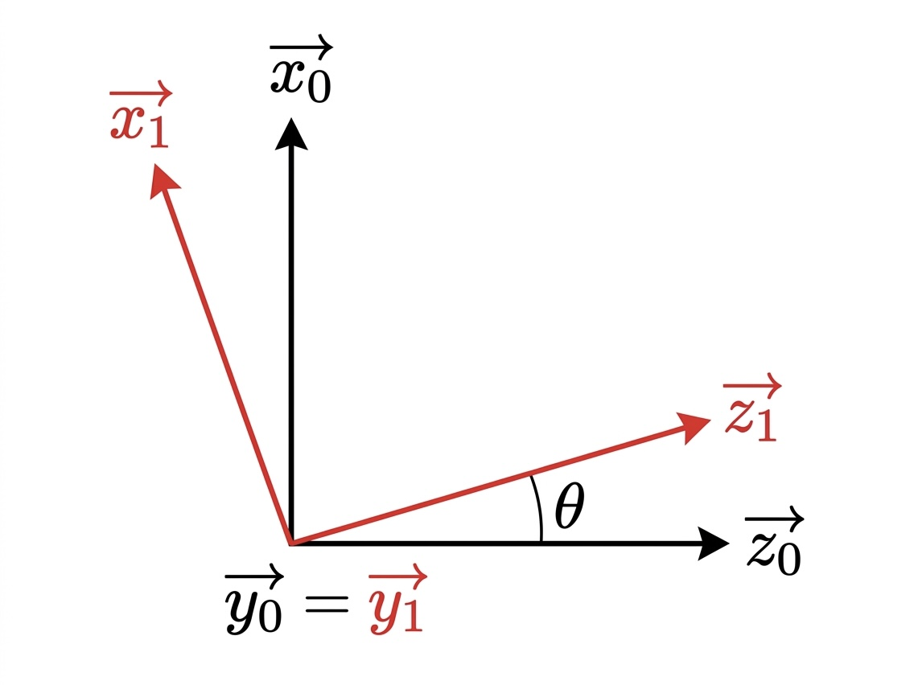
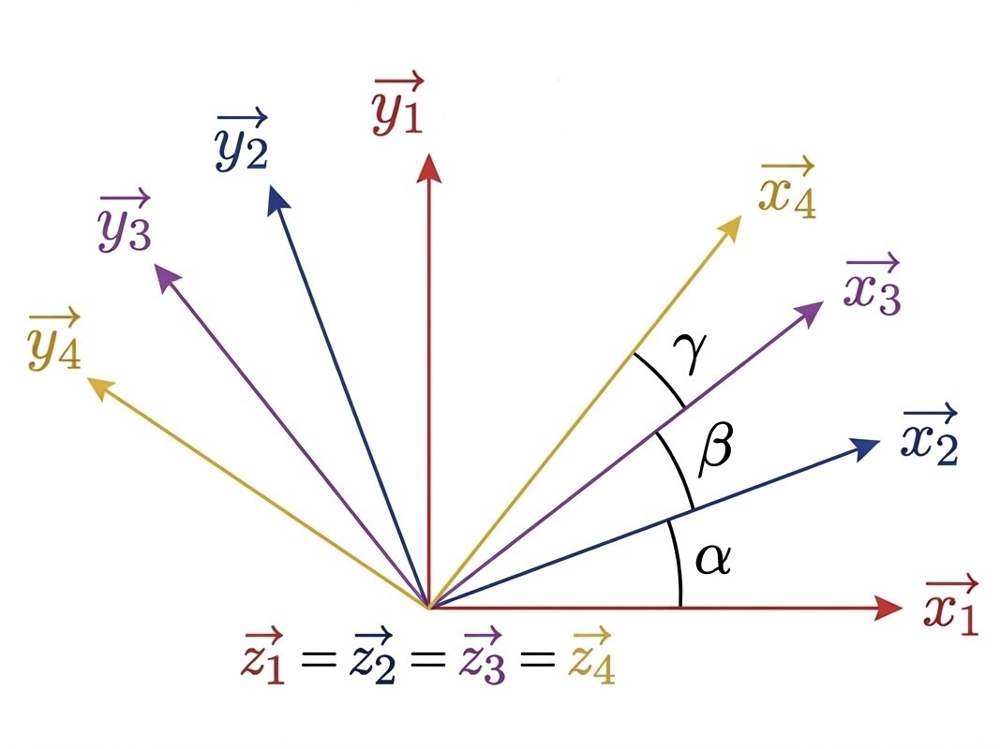
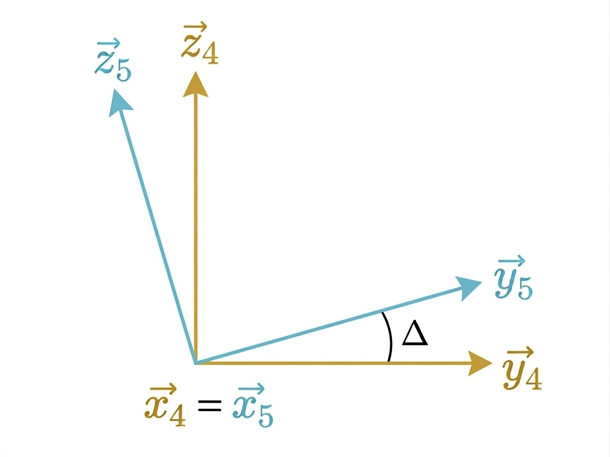

La géométrie
du mouvement.
Le schéma cinématique décrit l'architecture mécanique du bras robotique et les liaisons entre ses différents solides. Le graphe des liaisons associé répertorie les degrés de liberté, les actionneurs (servomoteurs, courroie) et les efforts extérieurs (poids) appliqués à chaque élément du système.


Les variables suivantes paramètrent la cinématique du système et seront utilisées dans l'établissement des équations de la dynamique du bras robotique.
b' = longueur de la poutre
Les schémas ci-dessous illustrent les rotations successives et les changements de repères associés à ces variables géométriques.



Pour piloter précisément le robot et anticiper ses mouvements, nous avons établi son Modèle Dynamique Inverse (MDI). L'établissement du MDI permet d'obtenir les équations analytiques des cinq couples moteurs qui nous permettront par la suite d'obtenir, en faisant varier les paramètres selon les objectifs définis dans le cahier des charges, les valeurs numériques des couples moteurs.
Le couple noté Cij est donc le couple du moteur faisant tourner le solide j par rapport au solide i. Cliquez sur un couple moteur pour voir son équation analytique.
Pour l'application numérique, nous avons décidé de simuler le pire cas possible, c'est-à-dire : tous les angles à 0° — bras tendu en position horizontale, toutes les vitesses angulaires à 1,5 rad/s — chaque moteur effectue 86° en une seconde, toutes les accélérations angulaires à 5 rad/s² — la vitesse de 1,5 rad/s est atteinte en 0,3 s. Nous obtenons donc les valeurs numériques suivantes.
Le détail des calculs analytiques est disponible en annexe.